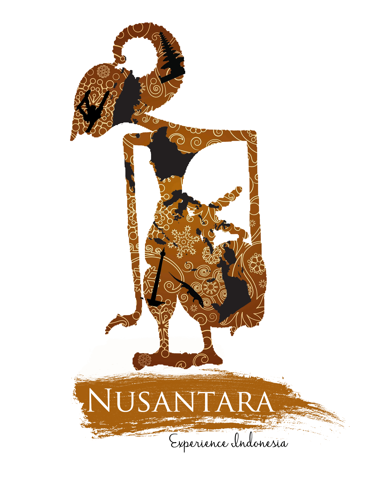

an event by  Designed by Bernardus Billy Tjiptoning
Designed by Bernardus Billy Tjiptoning
Scroll to continue
Scroll to continue

Donate Here!
Donate Here!
Indonesian Culture
We do not claim these photos.Angklung

Wayang

Culinary
We do not claim these photos.Bakmi Pangsit

Satay

Batagor

Rendang


Officer
Gian Wirjawan
BISA President
BISA President

William AP
Chief Coordinator
Chief Coordinator

Latasha Harahap
Event Organizer
Event Organizer
Nadia Christie
Booth Organizer
Booth Organizer
Marvin Lee
Logistics
Logistics
Felix Saputra
Treasury
Treasury
Hendo Lim
Marketing
Marketing
Ivander Tee
Community Relations
Community Relations
Dhea Suseno
Creative Management
Creative Management
Adriana Salim
Documentation
Documentation